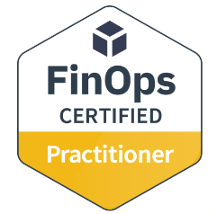

FinOps Certified Practitioner
FinOps Foundation
Certification
FinOps & cloud cost
Overview
FinOps Certified Practitioner establishes foundational working knowledge of FinOps principles, capabilities, and practices across business, IT, and finance. It prepares learners to make evidence-based decisions about cloud use and business value, with coverage organized around the FinOps lifecycle: Inform, Optimize, and Operate. The Linux Foundation positions it for people in cloud, finance, and technology roles; earning the credential requires course participation and a knowledge exam.
make evidence-based decisions in near-real time
Syllabus & skills
- FinOps principles and framework capabilities
- Inform, Optimize, and Operate lifecycle
- Chargeback and allocation
- Cloud cost optimization and efficiency
- Reserved instance purchasing
- Rightsizing and tagging strategy
Issuer documentation
FinOps Certified Practitioner
The Linux Foundation, listed on Credly
See Source